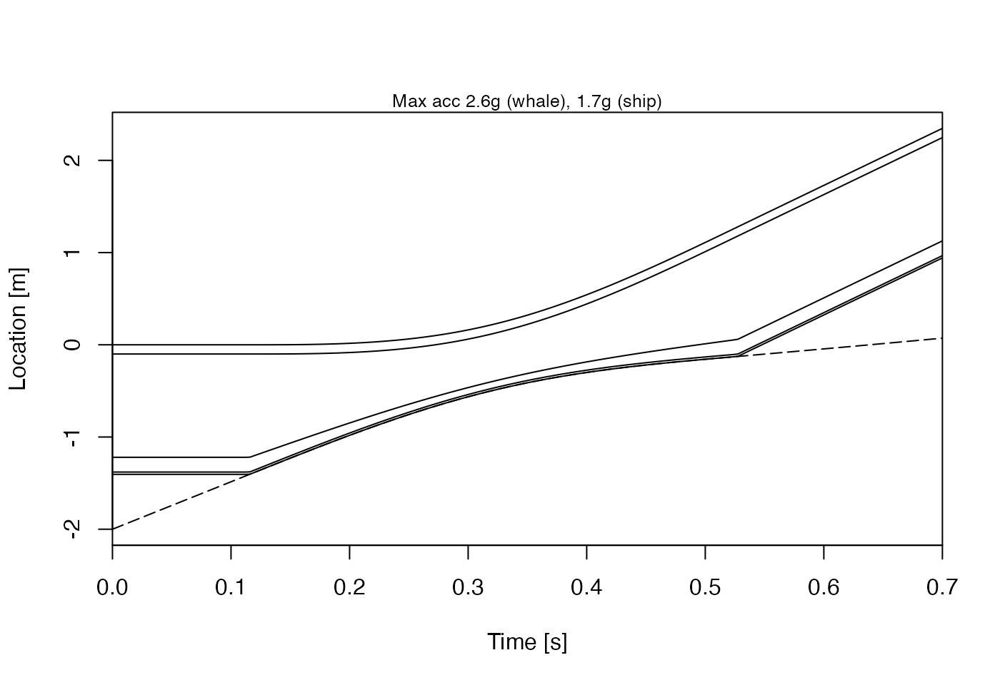
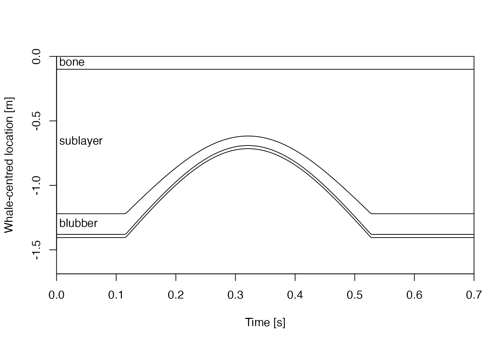

Newtonian mechanics are used, taking the ship as non-deformable,
and the whale as being cushioned by a skin layer and a blubber layer.
The forces are calculated by
shipWaterForce(),
whaleSkinForce(),
whaleCompressionForce(), and
whaleWaterForce() and the integration is carried out with
deSolve::lsoda().
Arguments
- t
a suggested vector of times (s) at which the simulated state will be reported. This is only a suggestion, however, because
strikeis set up to detect high accelerations caused by bone compression, and may set a finer reporting interval, if such accelerations are detected. The detection is based on thickness of compressed blubber and sublayer; if either gets below 1 percent of the initial(uncompressed) value, then a trial time grid is computed, with 20 points during the timescale for bone compression, calculated as \(0.5*sqrt(Ly*Lz*a[4]*b[4]/(l[4]*mw)\), with terms as discussed in the documentation forparameters(). If this trial grid is finer than the grid in thetparameter, then the simulation is redone using the new grid. Note that this means that the output will be finer, so code should not rely on the output time grid being- state
A list or named vector holding the initial state of the model: ship position
xs(m), ship speedvs(m/s), whale positionxw(m), and whale speedvw(m/s).- parms
A named list holding model parameters, created by
parameters().- debug
Integer indicating debugging level, 0 for quiet operation and higher values for more verbose monitoring of progress through the function.
Value
An object of class "strike", consisting of a
list containing vectors for time (t (s)), ship position (xs (m)),
boat speed (vs (m/s)), whale position (xw (m)), whale speed (vw (m/s)),
boat acceleration (dvsdt (m/s^2)), and whale acceleration (dvwdt (m/s^2)),
a list containing the model parameters (parms), a list with the results of
the skin force calculation (SWF), a list with the results of the compression
force calculations (WCF), and a vector of whale water force (WWF).
References
See whalestrike() for a list of references.
Examples
library(whalestrike)
# Example 1: graphs, as in the shiny app
t <- seq(0, 0.7, length.out = 200)
state <- list(xs = -2, vs = knot2mps(10), xw = 0, vw = 0) # ship speed 10 knots
parms <- parameters()
sol <- strike(t, state, parms)
par(mfcol = c(1, 3), mar = c(3, 3, 0.5, 2), mgp = c(2, 0.7, 0), cex = 0.7)
plot(sol)

# Example 2: time-series plots of blubber stress and stress/strength,
# for a 200 tonne ship moving at 10 knots
t <- seq(0, 0.7, length.out = 1000)
state <- list(xs = -2, vs = knot2mps(10), xw = 0, vw = 0) # ship 10 knots
parms <- parameters(ms = 200 * 1000) # 1 metric tonne is 1000 kg
sol <- strike(t, state, parms)
par(mfrow = c(2, 1), mar = c(3, 3, 0.5, 2), mgp = c(2, 0.7, 0), cex = 0.7)
plot(t, sol$WCF$stress / 1e6,
type = "l",
xlab = "Time [s]", ylab = "Blubber stress [MPa]"
)
plot(t, sol$WCF$stress / sol$parms$s[2],
type = "l",
xlab = "Time [s]", ylab = "Blubber stress / strength"
)

# Example 3: max stress and stress/strength, for a 200 tonne ship
# moving at various speeds. This is a slow calculation, so we do
# not run it by default.
if (FALSE) { # \dontrun{
knots <- seq(0, 20, 0.5)
maxStress <- NULL
maxStressOverStrength <- NULL
for (speed in knot2mps(knots)) {
t <- seq(0, 10, length.out = 1000)
state <- list(xs = -2, vs = speed, xw = 0, vw = 0)
parms <- parameters(ms = 200 * 1000) # 1 metric tonne is 1000 kg
sol <- strike(t, state, parms)
maxStress <- c(maxStress, max(sol$WCF$stress))
maxStressOverStrength <- c(maxStressOverStrength, max(sol$WCF$stress / sol$parms$s[2]))
}
par(mfrow = c(2, 1), mar = c(3, 3, 0.5, 2), mgp = c(2, 0.7, 0), cex = 0.7)
nonzero <- maxStress > 0
plot(knots[nonzero], log10(maxStress[nonzero]),
type = "o", pch = 20, xaxs = "i", yaxs = "i",
xlab = "Ship Speed [knots]", ylab = "log10 peak blubber stress"
)
abline(h = log10(sol$parms$s[2]), lty = 2)
plot(knots[nonzero], log10(maxStressOverStrength[nonzero]),
type = "o", pch = 20, xaxs = "i", yaxs = "i",
xlab = "Ship Speed [knots]", ylab = "log10 peak blubber stress / strength"
)
abline(h = 0, lty = 2)
} # }